Accéder aux statistiques
-
Depuis le Menu principal de l'interface d'administration, dans la section Analyse, cliquez sur Statistiques :
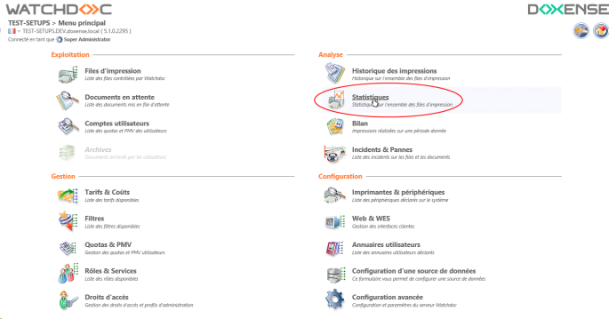
è Vous accédez à l'interface Statistiques dotée d'un encart de recherche et d'un encart permettant l'affichage des données.
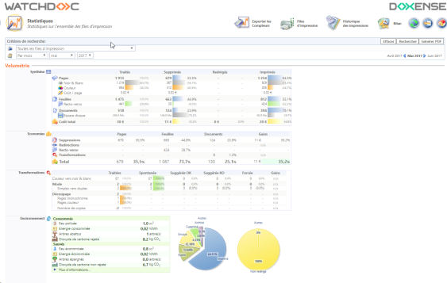
Description de la section Critères de recherche
La section Critères de recherche contient un moteur permettant de définir précisément le périmètre des statistiques affichées :
-
la file ou le groupe de files ;
-
la date ou l'intervalle de dates pour lesquelles vous souhaitez des statistiques.
Pour lancer la recherche de statistiques :
-
sélectionnez la file ou le groupe de files d'impression dont vous souhaitez afficher les statistiques ;
-
sélectionnez la date ou l'intervalle des dates pour lesquelles vous souhaitez obtenir des statistiques :
-
soit à l'aide des listes déroulantes ;
-
soit à l'aide des flèches permettant de choisir le jour, le mois et l'année ;
-
-
cliquez sur le bouton Rechercher pour lancer la recherche :
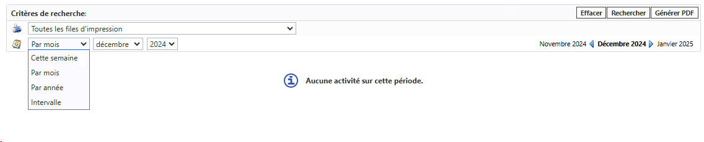
Note : si une date ultérieure au mois courant est sélectionnée, un message informe, en toute logique, qu'aucune activité n'est mesurée sur la période.
Description de la section Volumétrie
Sous-section Synthèse
Cette section fournit dans un tableau croisé des données relatives aux documents. Les documents y sont présentés selon leur état :
-
Traités : totalise le nombre de demande d'impressions traitées par la solution Watchdoc pour la file d'impression sélectionnée et dans l'intervalle de date sélectionné ;
-
Supprimés : nombre (et pourcentage) de documents non imprimés pour cause de suppression demandée par l'usager, au terme d'un délai prédéfini automatique ou par application de règles constitutives d'une politique d'impression ;
-
Redirigés : nombre de documents dont l'impression a été redirigée vers une autre file (pour cause d'indisponibilité de la file sur laquelle elles ont été lancées, notamment) ;
-
Imprimés : nombre (et pourcentage) de documents effectivement imprimés.
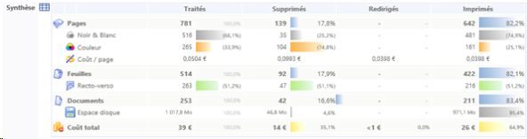
Sous-section Economies
L'encart présente les économies réalisées grâce aux opérations menées depuis le gestionnaire d'impression sur :
-
les pages, (1 recto ou 1 verso) ;
-
les feuilles (1 recto/verso) ;
-
les documents : un lot de plusieurs feuilles.
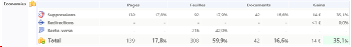
Les opérations permettant de réaliser des économies sont :
-
les suppressions : suppression par l'utilisateur ou suppression automatique par le système de gestion des impressions d'une impression demandée ;
-
les redirections : redirections par Watchdoc, permettant de renvoyer les impressions vers un périphérique optimisé en fonction du type de travail à réaliser ;
-
les recto-verso : choix d'une impression utilisant les 2 faces d'une feuille.
-
Les économies sont exprimées dans la devise définie lors de la configuration initiale de Watchdoc et calculées à partir du Coût réel à la page défini lors de la configuration de la file ou du groupe de files d'impression (onglet Tarification).
Sous-section Transformations Transformation de spools transfo de spools
La section présente les transformations appliquées aux impressions lorsque la fonction de Transformation des travaux (de spools) est activée.
Le tableau fournit des précisions sur la nature de la transformation qui a eu lieu au moment de la validation :
-
couleur vers noir & blanc : nombre de demandes d'impressions couleur qui ont été transformées en impressions noir&blanc ;
-
mode simplex/duplex : nombre de demandes d'impressions simplex (= recto simple) qui ont été transformées en impressions duplex (= recto-verso) ou inversement ;
-
découpage : nombre de pages jugées inutiles qui ont été supprimées au moment de la validation et n'ont donc pas été imprimées ;
-
nombre de copies : nombre de demandes de copies qui ont été modifiées au moment de la validation. (N.B. : un chiffre négatif indique que le nombre d'exemplaires demandés a été augmenté au moment de la validation).
Le tableau fournit des précisions sur les modalités du choix de la transformation :
-
spontanée : la transformation a été décidée par l'utilisateur ;
-
suggérée OK : acceptée par l'utilisateur après suggestion par Watchdoc ;
-
suggérée KO : refusée par l'utilisateur après suggestion par Watchdoc ;.
-
forcée : paramétrée dans Watchdoc, la transformation est imposée à l'utilisateur.
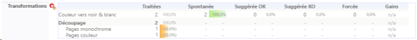
Sous-section Environnement
Cette section présente l'impact écologique des impressions ainsi que les efforts de l'organisation ont permis sur l'empreinte écologique grâce à l'utilisation de Watchdoc. Les critères permettant d'établir ces calculs sont écrits dans l'encart Plus d'informations.
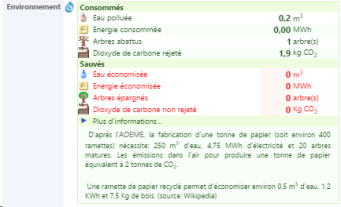
Note : pour plus d'informations sur le calcul des indicateurs, consultez la documentation sur le Calculateur d'économies.
Section Activité
La section contient des graphiques illustrant l'activité de l'impression, représentée par 3 couleurs :
-
par semaine, par mois, par année, par jour;
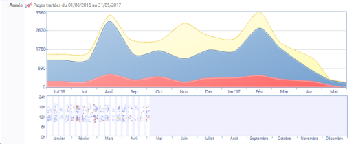
-
avec un graphique représentant la répartition des demandes en fonction des horaires de travail, le statut des travaux et le statut des périphériques ;
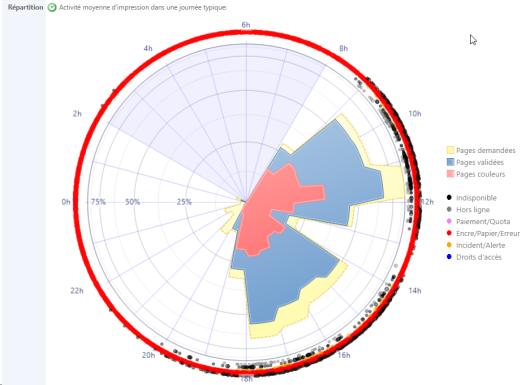
-
Tendances : lorsque les statistiques d'une période donnée sont demandées, une sous-section Tendances apparaît pour illustrer les variations de consommation relevées dans l'intervalle étudié
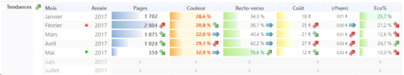
Section Classements
L'encart présente les groupes de files, les files, l'ensemble du parc et les utilisateurs par ordre en fonction de leur activité d'impression.
Vous disposez ainsi d'une vue synthétique sur l'activité des utilisateurs pour lesquels sont précisés :
-
Pages : nombre de pages imprimées dans la période ;
-
Couleur : le taux d'impressions couleurs par rapport à la totalité des impressions ;
-
Feuilles : le nombre de feuilles imprimées dans la périodes ;
-
Recto-verso : le taux d'impression en recto/verso par rapport à la totalité des impressions ;
-
Coût : coût total des impressions, calculé à partir du Coût réel défini dans la configuration de chaque file d'impression.
Dans les listes (Groupes, Files et Utilisateurs), plusieurs zones sont cliquables :
-
le nom du Groupe de files ou de la File, qui donne accès à l'historique des impressionsdu Groupe ou de la File ;
-
le nom de l'utilisateur qui donne accès à l'historique détaillé de ses impressions (également accessible par sous l'onglet "Historique").
Dans les graphes, certains libellés cliquables donnent accès à l'interface Bilan par qui affiche un bilan détaillé de l'activité par Utilisateurs, Rôles, Périphériques, Codes clients, Applications et Postes.
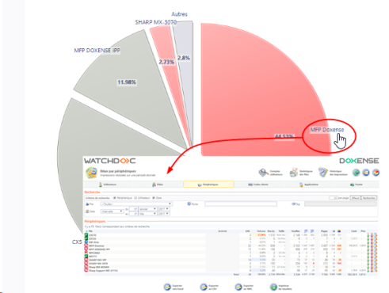
Section Typologie
Sous-section Propriétés
Cette sous-section présente l'activité d'impression sous forme de graphes selon différents critères :
-
Couleur / N&B
-
Formats (A4 et autres)
-
Recto / Recto-verso
-
Analyse de l'option recto/verso.
Sous-section Répartition par page
Cette section présente les impressions en fonction du nombre de pages du document et fournit un pourcentage sur le volume représenté par chaque type de document ainsi que l'information relative à l'espace disque occupé.
Sous-section Moyennes
Cette section présente différentes moyennes relatives aux impressions traitées :
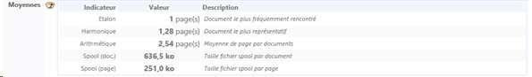
Sous-section Applications
Cet encart présente les impressions par type d'applications.
Le graphique est cliquable et donne accès à la liste des impressions en fonction des applications bureautiques dont elles sont issues, également accessible depuis l'onglet Applications.
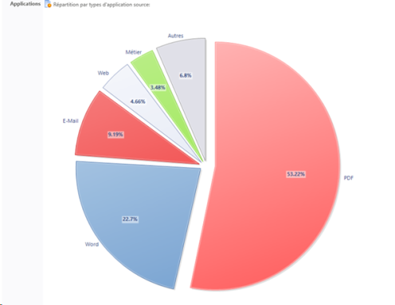
Sous-section Code de statut
Cette section présente des graphiques illustrant les impressions en fonction de leur statut :
-
imprimé : document effectivement imprimé
-
supprimé : document supprimé après demande d'impression ;
-
envoyé : document numérisé depuis le périphérique multifonction et envoyé à un destinataire.